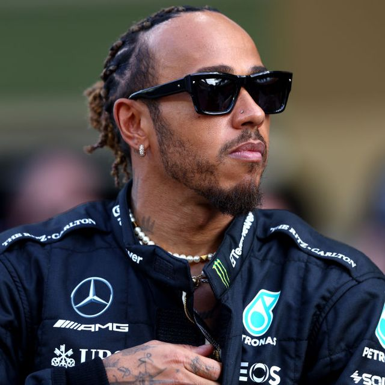
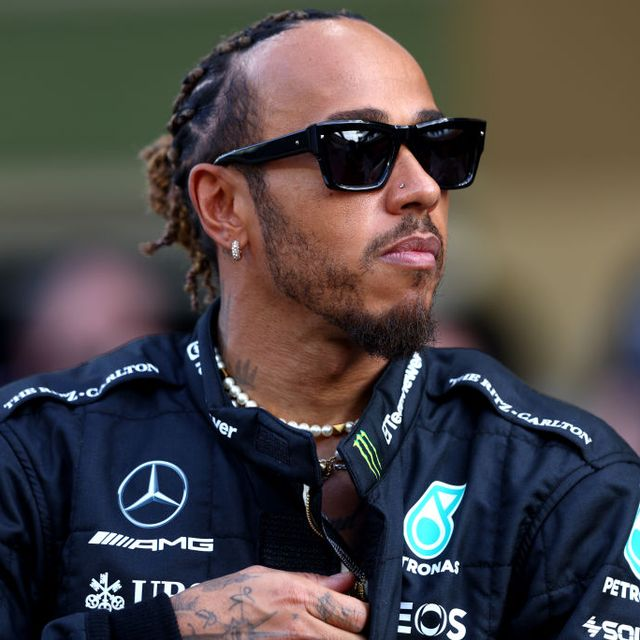
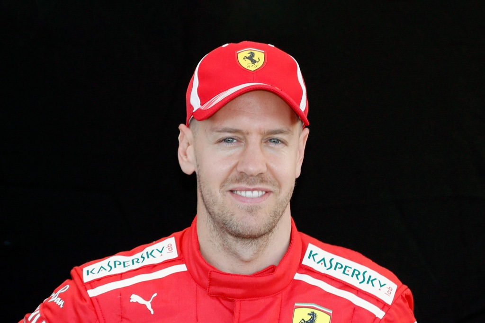
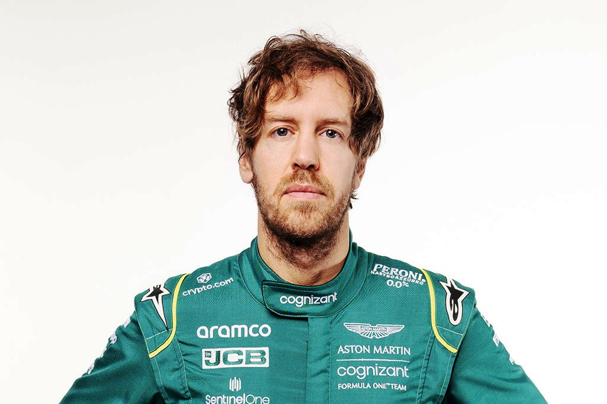
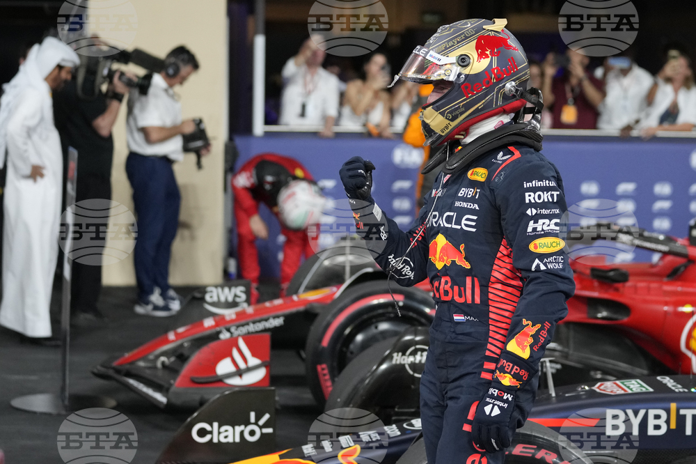
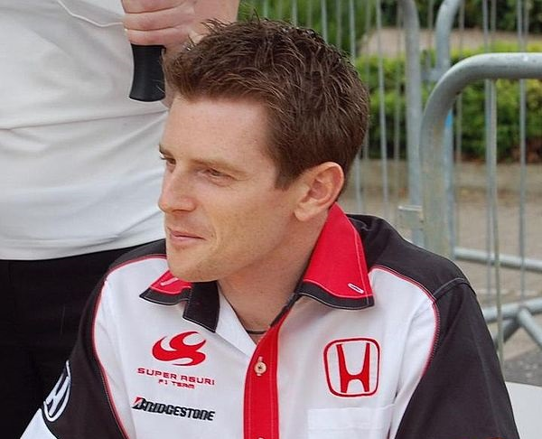
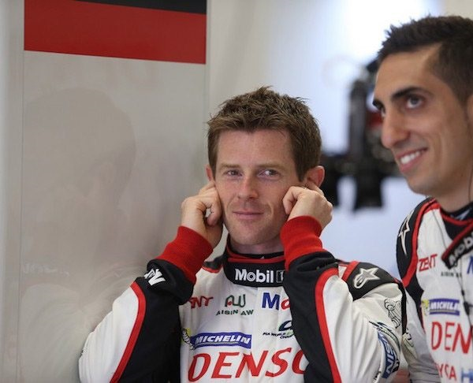
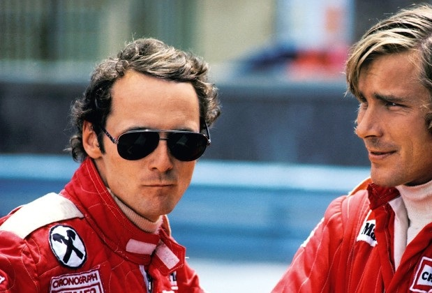
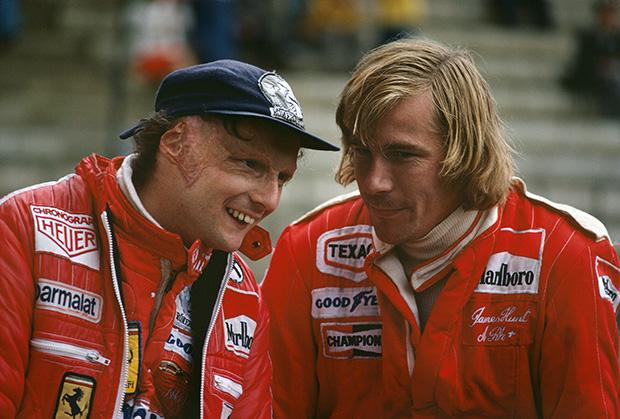

Картинг състезатели

Картингът служи като стартова точка за мнозина от най-успешните автомобилни състезатели по света. Тези талантливи индивиди използват картовите състезания като стъпка за постигане на голями успехи в моторните спортове. Вотът на вълнение и страст към скоростта е нещо, което ги отличава. В следващата статия ще се запознаем с някои от най-известните и вълнуващи имена в света на картинга:
10
ДЕКЕМВРИ

.png)


1. Луис Хамилтън: Преди да стане най-успешният пилот в историята на Формула 1, Луис Хамилтън изгражда своя път в картинга. Неговият талант и стремеж за успех бързо го изведоха в световната сцена.
 

2. Себастиан Фетел: Четирократният световен шампион във Формула 1, Себастиан Фетел, започна своята автомобилна кариера с картинг. Неговите умения на пистата бързо го направиха едно от най-обещаващите имена в спорта.
 3. Макс Ферстапен: Младият и бърз пилот от Нидерландия, Макс Ферстапен, има старт в картинга. Сега той е известен като един от най-агресивните и виртуозни пилоти във Формула 1.
4. Антъни Дейвидсън: Антъни Дейвидсън, който е пилот-тестер във Формула 1 и коментатор, е посветил началото на своята кариера на картинга. Той се превърна във важна фигура в автомобилната индустрия.
 5. Ники Лауда: Легендата в света на автомобилните състезания, Ники Лауда, също е стъпил първите си стъпки в картинга. Той стана трикратен световен шампион във Формула 1 и остави трайно влияние в историята на автомобилния спорт.
 